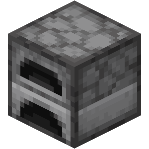
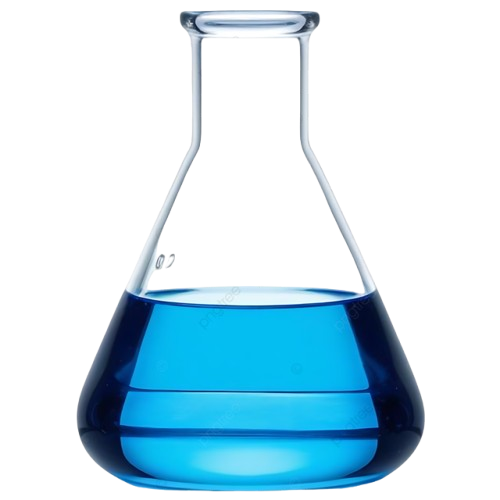

Bài 15: Phương Pháp Tách và Tái Chế Kim Loại
03-Hoàng Ngọc Minh Anh
06-Nguyễn Duy Bảo
08-Huỳnh Nguyễn Nhật Duy
33-Phạm Thu Thảo
36-Nguyễn Viết Trí
1. Trạng thái tự nhiên của kim loại
Kim loại tồn tại trong vỏ Trái Đất dưới hai dạng cơ bản:
- Đơn chất: Kim loại hoạt động hóa học yếu (Vàng, Bạch kim...).
- Hợp chất: Tồn tại trong các loại quặng như oxit, sunfua, muối... (Sắt, Nhôm, Đồng...).
2. Phương pháp tách kim loại
A. Nhiệt luyện & Thủy luyện (Kim loại sau Al)



Câu 1: Phương pháp thủy luyện dùng để tách kim loại nào?
Câu 2: Ở nhiệt độ cao, chất nào sau đây không khử được Fe2O3?
Câu 3: Kim loại nào sau đây điều chế được bằng phương pháp nhiệt luyện với chất khử là H2?
Câu 4: Cho luồng khí CO dư qua hỗn hợp các oxide CuO, Fe2O3, Al2O3, MgO nung nóng ở nhiệt độ cao. Sau phản ứng, hỗn hợp chất rắn thu được gồm:
Câu 5 (Đúng/Sai): Hình vẽ sau đây mô tả thí nghiệm khí X tác dụng với chất rắn Y, nung nóng sinh ra khí Z.
| a. Khí X là chất khí không màu, không mùi, ít tan trong nước, rất độc. | |
| b. Khí Z là nguyên nhân gây hiệu ứng nhà kính. | |
| c. Phương trình tạo ra khí Z là CuO + CO (t°) → Cu + CO2. | |
| d. Thí nghiệm được sử dụng để điều chế kim loại nhóm IA, IIA. |
Câu 6: Dẫn khí CO dư qua ống sứ đựng 16 gam Fe2O3 nung nóng, sau khi phản ứng xảy ra hoàn toàn thu được m gam kim loại. Giá trị của m là bao nhiêu?
Giải chi tiết theo dữ kiện:
3CO + Fe2O3 (t°) → 2Fe + 3CO2
Ta có nFe = 3nFe2O3 = 0,3 mol.
Khối lượng Fe thu được là mFe = 0,3 * 56 = 16,8 gam.
Câu 7: Cho hỗn hợp X gồm các oxide MgO, Fe2O3, CuO, Na2O, ZnO. Cho khí CO (dư) tác dụng với X, có bao nhiêu kim loại thu được sau phản ứng?
Giải thích: CO khử các oxide kim loại đứng sau Al tạo thành kim loại. Các kim loại thu được là: Fe, Cu, Zn.
Câu 8: Khi tách kim loại Ag từ Ag2S bằng phương pháp cyanide.
(1) Dùng NaCN để hòa tan Ag2S
(2) Dùng Zn để khử cation Ag+ trong phức
(3) Cuối cùng dùng HNO3 để loại bỏ kẽm còn dư.
(4) Đây là phương pháp thủy luyện để tách kim loại.
Số phát biểu đúng là bao nhiêu?
B. Điện phân nóng chảy (Kim loại mạnh)
Dành cho các kim loại từ Li đến Al. Đây là phương pháp dùng dòng điện để khử ion kim loại.
Ví dụ tách Nhôm từ quặng Bôxit:
2Al₂O₃ (đpnc) → 4Al + 3O₂Câu 1: Trong công nghiệp, Mg được điều chế bằng cách nào dưới đây?
Câu 2 (Đúng/Sai): Điện phân MgCl2 nóng chảy. MgCl2 nóng chảy phân li thành các ion Mg2+ và ion Cl-.
| a. Cation Mg2+ di chuyển về cực âm (cathode) và anion Cl- di chuyển về cực dương (anode) của bình điện phân. | |
| b. Tại cathode xảy ra quá trình oxi hóa: Mg2+ + 2e ⟶ Mg. | |
| c. Tại anode xảy ra quá trình khử: 2Cl- ⟶ Cl2 + 2e. | |
| d. Có thể điều chế Mg từ MgCl2 bằng phương pháp nhiệt luyện. |
- Ý (b) sai: tại cathode xảy ra quá trình khử.
- Ý (c) sai: tại anode xảy ra quá trình oxi hoá.
- Ý (d) sai: Mg chỉ điều chế được bằng điện phân nóng chảy.
3. Tái chế kim loại
Tái chế là quá trình thu gom và xử lý kim loại phế liệu để tạo ra nguyên liệu mới.
- Lợi ích: Tiết kiệm tài nguyên, giảm năng lượng sản xuất (Nhôm tái chế tiết kiệm 95% năng lượng).
- Môi trường: Giảm thiểu rác thải và khí thải độc hại.
Câu 1 (Đúng/Sai): Tái chế kim loại đã trở thành một phần quan trọng trong quản lý tài nguyên và bảo vệ môi trường.
| a) Tái chế kim loại giúp giảm lượng chất thải và tiết kiệm năng lượng. | |
| b) Nhu cầu tái chế kim loại không liên quan đến việc bảo vệ môi trường. | |
| c) Tái chế nhôm giúp tiết kiệm năng lượng hơn so với sản xuất nhôm từ quặng bauxite. | |
| d) Kim loại quý như vàng và bạc không được tái chế vì chi phí quá cao. |
- Ý (b) sai: Tái chế kim loại là để bảo vệ môi trường.
- Ý (d) sai: Kim loại quý được tái chế rất hiệu quả vì giá trị cao của chúng.